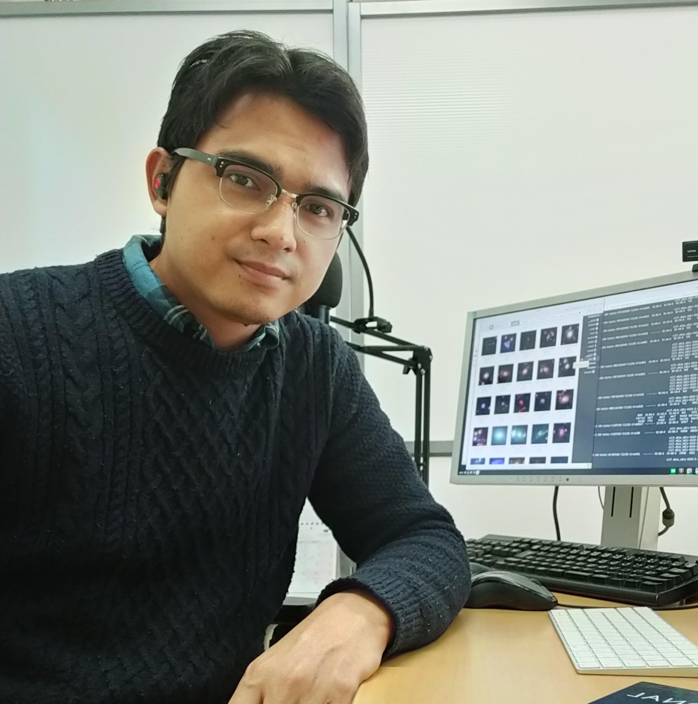

CosmoLens

Anton T. Jaelani
antontj@as.itb.ac.idanton@phys.kindai.ac.jp
007
1.6%
Employment
-
2020 - now
-
2018 - 2021
Postdoctoral
Department of Physics
Kindai University -
2018
Researcher
Bosscha Observatory
Institut Teknologi Bandung -
2017 - 2018
Research Assistant
Astronomical Institute
Tohoku University -
2012 - 2014
Research Assistant
Astronomy Research Division
Institut Teknologi Bandung
Education
-
2014 - 2018
Ph. D. in Astrophysics
Astronomical Institute
Tohoku University -
2012 - 2014
M. Sc. in Astrophysics
Astronomy Research Division
Institut Teknologi Bandung -
2008 - 2012
B. Sc. in Astrophysics
Astronomy Research Division
Institut Teknologi Bandung -
2005 - 2008
Senior High School
SMA Negeri 1 Banjar
-
2002 - 2005
Junior High School
SMP Negeri 3 Banjar
-
1996 - 2002
Elementary School
MI Banjar 2

Profile
I attended undergraduate school at Institut Teknologi Bandung (ITB), Indonesia, where I majored in Astronomy. I then continue my master in astronomy and was luckily accepted by Astronomy Research Division at ITB. ITB has the oldest astronomy graduate school and hosts the optical telescope at the Bosscha Observatory in Bandung, Indonesia. I worked with Prof. Premana W. Premadi on the strong gravitational lensing for my Bachelor and Master thesis, which we studied both theoretical and observational aspects of cluster-scale lensing.
I then moved to Japan for my PhD studies. I attended the Astronomical Institute in Sendai. I worked with Prof. Toshifumi Futamase, Dr. Anupreeta More, and Prof. Masashi Chiba on strong lensing at group-scale, using the Strong Lensing Legacy Survey-ARCS (SARCS). I also participate in the Hyper Suprime-Cam Subaru Strategic Program (HSC-SSP), an ambitious program to map 1400 squared degrees of sky with grizy down to r=26 magnitudes, taking advantage of the high etendue delivered by the 1.7-degree diameter FOV Hyper Suprime-Cam onboard the 8.2-m Subaru telescope. I was mainly involved in gravitational lensing, and galaxy cluster studies utilizing the HSC-SSP data and follwing them up with the suite of instruments at Subaru, e.g. FOCAS and AO-InfraRed Camera and Spectrograph (IRCS).
After finishing my PhD, I back to my country at the Bosscha Observatory as a researcher for six months. I started my first postdoc position with Prof. Kaiki Taro Inoue in Japan, where I spent most of the time participating Strong Lensing working groups in HSC-SSP Program, especially on strong lensing analysis. Recently, I joined ITB as a lecturer in Astronomy Research Division in ITB.
Curriculum Vitae
Office Address
- Next Postal Address: Astronomy Research Division, Faculty of Mathematics and Natural Sciences, Institut Teknologi Bandung, Jl. Ganesha No. 10, Bandung, West Java 40132, Indonesia
- Room: CAS Building, 6th Floor
- Phone: +62-22-2511576
- Fax: +62-22-2509170
- E-mail: antontj@as.itb.ac.id
Personal Details
- Nationality: Indonesia
- Date of Birth: January 10th, 1990
- Status: Married
Present Position
- Lecturer [2020 - now]
Astronomy Research Division, Faculty of Mathematics and Natural Sciences, Institut Teknologi Bandung
Position Held
- 2018 - 2021, Postdoctoral, Department of Physics, Kindai University, Japan
- 2019, Academic Assistant, Department of Astronomy, Institut Teknologi Bandung, Indonesia
- 2018, Research Fellow, Bosscha Observatory, Institut Teknologi Bandung, Indonesia
- 2017 - 2018, Research Assistant, Astronomical Institute, Tohoku University, Japan
Education
- 2014 - 2018, Astronomical Institute, Tohoku University, Japan (Doctor of Science)
- 2012 - 2014, Department of Astronomy, Institut Teknologi Bandung, Indonesia (Master of Science)
- 2008 - 2012, Department of Astronomy, Institut Teknologi Bandung, Indonesia (Bachelor of Science)
Society Membership
Visits
Miscellaneous
- Referee of papers submitted to The Journal of the Korean Astronomical Society
- Referee of papers submitted to Jurnal Sains & Dirgantara
- Observational experience at the following ground telescopes: Subaru (PI/co-I), SOAR (co-I), VLT (co-I), Magellan (co-I), Gemini (PI/co-I), SALT (co-I) [3+ nights]
- Observing with space telescopes: Hubble (co-I), XMM-Newton (co-I) [3 orbits + 11.94 hours]
[2] Lowongan Tim Peneliti Mahasiswa di CosmoLens Lab. Tahun 2021
Gambaran:
1 (satu) orang Asisten Peneliti pada untuk topik penelitian Galaksi dan Kosmologi.
Syarat:
1. Mahasiswa S1 Prodi Astronomi ITB (minimal tingkat 3),
2. sanggup bekerja min. 12 jam/bulan selama 10 bulan (part time),
3. berencana/sedang mengambil topik TA dalam bidang galaksi dan kosmologi,
4. "good endurance".
Bagi mahasiswa yang tertarik dapat menghubungi Anton T. Jaelani melalui email yang tertera di website ini paling lambat 21 Januari 2021 atau sampai ada pendaftar yang memenuhi kualifikasi.
[1] Lowongan Tim Peneliti Mahasiswa di CosmoLens Lab. Tahun 2021
Gambaran:
2 (dua) orang Asisten Peneliti pada untuk topik penelitian Galaksi dan Kosmologi menggunakan deep machine learning.
Syarat:
1. Mahasiswa S2 Prodi Astronomi ITB (bidang Astrofisika Lanjut),
2. sanggup bekerja min. 12 jam/bulan selama 10 bulan (part time),
3. punya ketertarikan dalam machine learning,
4. "good endurance".
Bagi mahasiswa yang tertarik dapat menghubungi Anton T. Jaelani melalui email yang tertera di website ini paling lambat 3 Januari 2021 atau sampai ada pendaftar yang memenuhi kualifikasi.
New Lenses from SuGOHI!
Recently, our SuGOHI paper series has been published in MNRAS. We revealed hundreds of new strong gravitational lensing candidates at group/cluster scale from the Hyper Suprime-Cam Subaru Strategic Program (HSC-SSP) Survey. (Figure taken from Jaelani et al., 2020, MNRAS, 495, Issue 1, 1291)
Compact galaxy
An usually compact lensed galaxy, HSC J0904–0102, discover from the from the Hyper Suprime-Cam Subaru Strategic Program (HSC-SSP) Survey. This is the second case after HSC J1152+0047 which is useful to study a source population that could not be studied before. (Figure taken from Jaelani et al., 2020, MNRAS, 494, Issue 3, 3156)
New Layout!
Welcome to my new webpages! I hope I can share my research and experience with new spirit. Please stay tune!
Mempersiapkan Penelitian dan Penulisan Artikel Ilmiah pada Publikasi Internasional Bereputasi
Ngobrol SanTEI #01 Menuju Publikasi Q1 bersama Anton Timur Jaelani.
Pengamatan Virtual Langit Malam 05 - Jarak dalam Astronomi
Untuk seri kelima ini, kami mengundang Bapak Dr. Anton T. Jaelani (Kelompok Keahlian Astronomi ITB) dan Denny Mandey (Astronom) untuk menemani Anda belajar mengenai cara astronom mengukur jarak antara benda-benda langit, termasuk dari Bumi kita sendiri.
Importance of radio telescope in Indonesia for global geodetic VLBI network
Description:
To keep up with the modern development of astronomy in the world, Indonesian astronomers have commenced studying the possibility of developing new observatory in other Indonesian regions that are suitable for the development of multi-wavelength astronomy.
Details
Besides optical wavelengths, radio waves are naturally the main choice to introduce the multi-wavelength domain regarding a variety of important scientific interests. Considering this development, radio telescopes must be provided and prepared further to work in the network of radio telescopes that already exists in many regions of the globe such as Very Long Baseline Interferometry (VLBI) network. Two places have been selected as a host of new radio telescopes. Mount Timau in Timor Island will be the host of the new National Observatory and in the original proposal, a radio telescope envisaged to be integrated to the next VLBI generation was proposed. Meanwhile, a decommissioned telecommunication antenna in the city of Jatiluhur is currently being undertaken to be converted into a radio telescope. To develop the Indonesian VLBI campaign, and considering two antennas will be available in Jatiluhur and in Timau site, in this work we first undertake to study the possibility to use these telescopes, not only for astronomy/astrometry, but also for geodesy to enhance a more multi-disciplinary and collaborative work. Here we simulate the implication of these two future Indonesian antennas to the estimates of Earth orientation parameters (polar motion, nutation, and dUT1) and the station position. The simulation was performed in two types of VLBI session. First, we conduct the simulation of an intensive session between Japanese antenna Syowa and Indonesian antennas. Next, we simulate the complete 24 hours session by considering some different network configurations. Generally, we found that the Indonesian antennas play an important role to improve the estimation of station position as well as the Earth orientation parameters.
About the Speaker:
Dr. Ibnu Nurul Huda is currently a Postdoctoral in Astronomy Research Division, Institut Teknologi Bandung.
How to become a successful Researcher or Scientist?
The upcoming episode of Medhok Sains will discuss about how to become a world class Researcher or Scientist. Please stay tune!
Exploring Your Potential to Face the New Normal
The upcoming episode of Medhok Sains will discuss about how we can explore our hidden potential to face the new normal. Please stay tune!
The Fisheries Sector and the Pandemic
The upcoming episode of Medhok Sains will discuss about the fisheries sector and the Coronavirus pandemic. Please stay tune!
Astronomical Basis Of Calendars
The upcoming episode of Medhok Sains will discuss about astronomical basis of calendar systems. Please stay tune!
When is the best time for sunbathing?
The new Medhok Bicara's video is already published. This video describes to us when is the best time for sunbathing. Sunbathing is important to keep our body healthy, especially during a current global pandemic. So, let's enjoy guys!